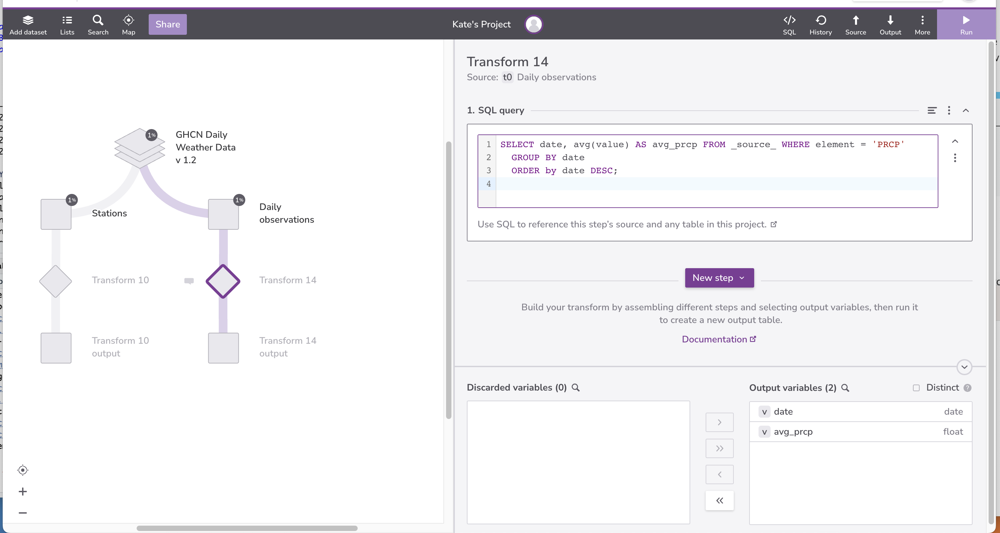
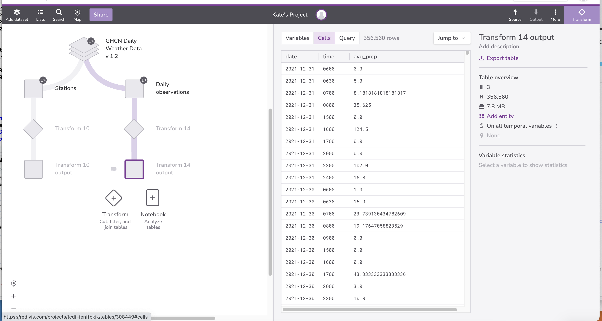
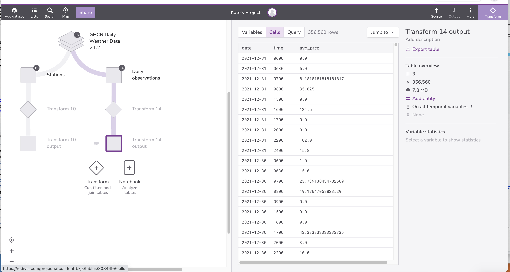
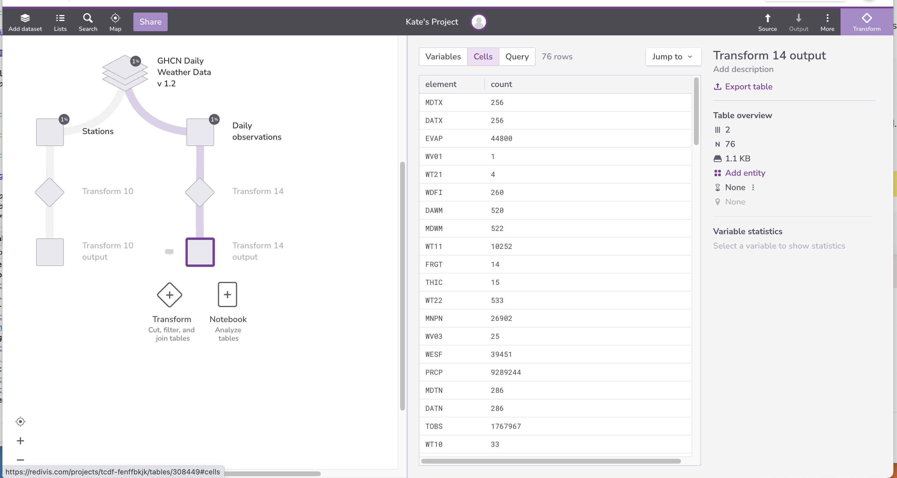
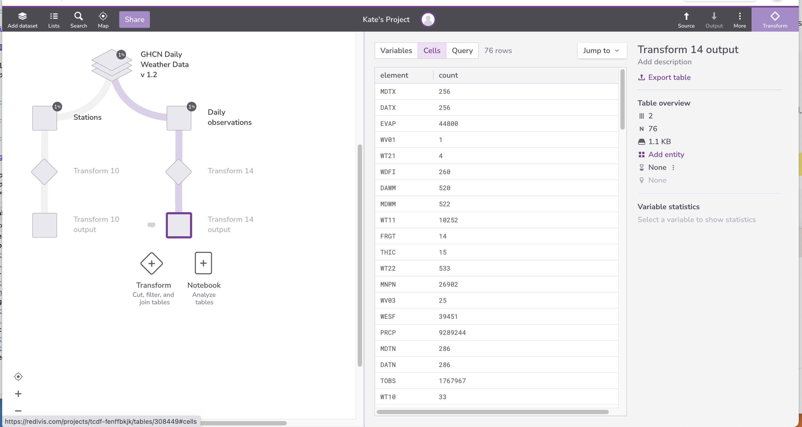

Aggregation
Last updated on 2023-10-10 | Edit this page
Overview
Questions
- How can I calculate sums, averages, and other summary values?
Objectives
- Define aggregation and give examples of its use.
- Write queries that compute aggregated values.
- Trace the execution of a query that performs aggregation.
- Explain how missing data is handled during aggregation.
We now want to calculate ranges and averages for our data. We know
how to select all of the dates from the Daily observations
table:
but to combine them, we must use an aggregation function such
as min or max. Each of these functions takes a
set of records as input, and produces a single record as output:
| min_date |
|---|
| 1871-07-01 |


| max_date |
|---|
| 2021-12-31 |

min and max are just two of the aggregation
functions built into SQL. Three others are avg,
count, and sum:
| avg_value |
|---|
| 24.895614002602183 |


| count |
|---|
| 9289244 |

| sum |
|---|
| 231261433.0 |


We used count(element) here, but we could just as easily
have counted date or any other field in the table, or even
used count(*), since the function doesn’t care about the
values themselves, just how many values there are.
SQL lets us do several aggregations at once. We can, for example, find the range of sensible precipitation measurements:
SQL
SELECT min(value) AS min, max(value) AS max FROM _source_
WHERE element = 'PRCP' AND value >= 0;| min | max |
|---|---|
| 0.0 | 22860.0 |


Another important fact is that when there are no values to aggregate
— for example, where there are no rows satisfying the WHERE
clause — aggregation’s result is “don’t know” rather than zero or some
other arbitrary value:
| min | max |
|---|---|
| -null- | -null- |


One final important feature of aggregation functions is that they are
inconsistent with the rest of SQL in a very useful way. If we add two
values, and one of them is null, the result is null. By extension, if we
use sum to add all the values in a set, and any of those
values are null, the result should also be null. It’s much more useful,
though, for aggregation functions to ignore null values and only combine
those that are non-null. This behavior lets us write our queries as:
| min |
|---|
| 1871-07-01 |
instead of always having to filter explicitly:
| min |
|---|
| 1871-07-01 |
Let’s say that we want to know the average precipitation by date. If we try the following query, Redivis will throw an error:
because Redivis doesn’t know which date to return alongside the average precipitation.

There are 54,963 unique dates. It’s not reasonable to write 54,963 queries of the form:
What we need to do is tell the database manager to aggregate the
average precipitation for each date separately using a
GROUP BY clause:
SQL
SELECT date, avg(value) AS avg_prcp FROM _source_ WHERE element = 'PRCP'
GROUP BY date
ORDER by date DESC;| date | avg_prcp |
|---|---|
| 2021-12-31 | 26.154761904761898 |
| 2021-12-30 | 32.957528957528964 |
| 2021-12-29 | 34.042307692307695 |
| 2021-12-28 | 16.272373540856034 |

GROUP BY does exactly what its name implies: groups all
the records with the same value for the specified field together so that
aggregation can process each batch separately.
Just as we can sort by multiple criteria at once, we can also group
by multiple criteria. To get the average reading by scientist and
quantity measured, for example, we just add another field to the
GROUP BY clause:
SQL
SELECT date, time, avg(value) AS avg_prcp FROM _source_ WHERE element = 'PRCP'
GROUP BY date, time
ORDER by date DESC, time ASC;| date | time | avg_prcp |
|---|---|---|
| 2021-12-31 | -null- | 27.441624365482234 |
| 2021-12-31 | 0600 | 0.0 |
| 2021-12-31 | 0630 | 5.0 |
| 2021-12-31 | 0700 | 8.1818181818181817 |
Note that we have added time to the list of fields
displayed, since the results wouldn’t make much sense otherwise.


Let’s go one step further and remove all the entries where we don’t know what time the measurement was taken:
SQL
SELECT date, time, avg(value) AS avg_prcp FROM _source_
WHERE element = 'PRCP' AND time NOT NULL
GROUP BY date, time
ORDER by date DESC, time ASC;| date | time | avg_prcp | |
|---|---|---|---|
| 2021-12-31 | 0600 | 0.0 | |
| 2021-12-31 | 0630 | 5.0 | |
| 2021-12-31 | 0700 | 8.1818181818181817 | |
| 2021-12-31 | 0800 | 35.625 | |
| 2021-12-31 | 1500 | 0.0 |
 

Looking more closely, this query:
selected records from the
Daily observationstable where theelementfield is ‘PRCP’ and thetimefield was not null;grouped those records into
dateandtimesubsets;ordered those subsets first by
date, and then bytime; andcalculated the average precipitation of each subset.
 
The answer is 3.0. NULL is not a value; it is the
absence of a value. As such it is not included in the calculation.